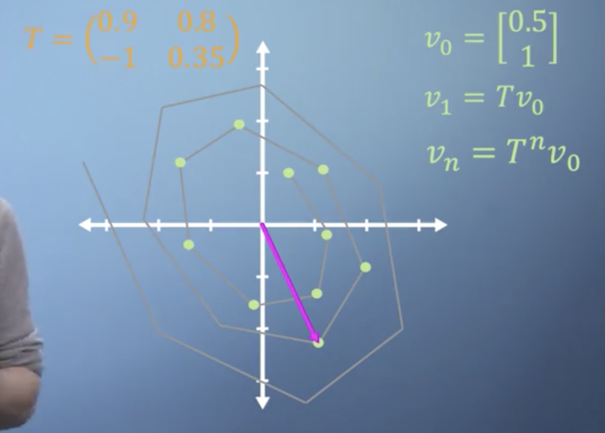
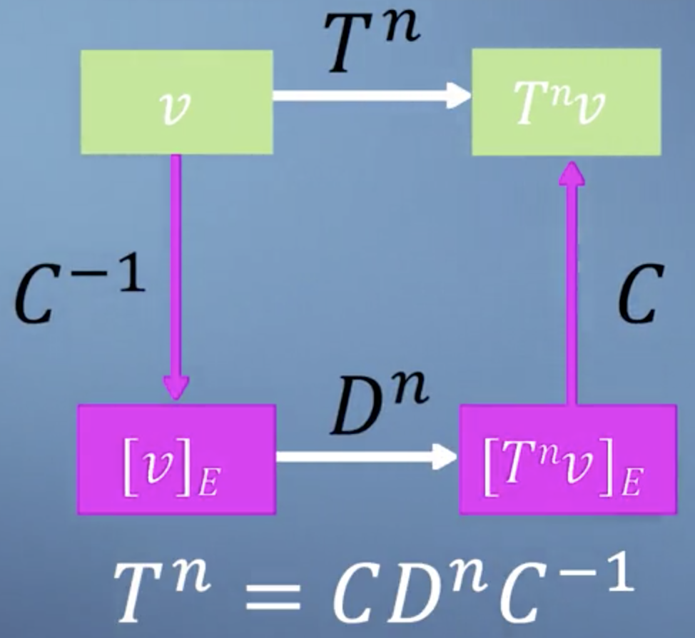
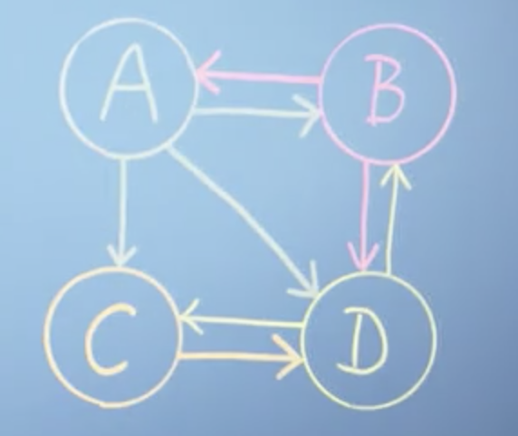
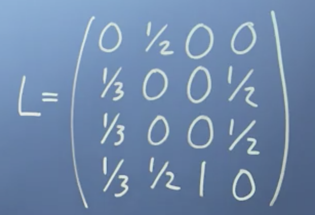

学习目标
- 认识什么是特征向量、特征值？
- 能够应用数学公式在实际情况中
- 构建对高维度特征系统的认知
什么是Eigen-Things?
特征值、或者特征向量等概念是依赖于线性变换这个基础概念而存在，并非可以独立存在的概念。
在线性代数的领域中，一般讲到线性变换也就等同于说一个matrix。因此，我们会经常听到这种说法：
- 矩阵的特征值是…
- 这个线性变换的特征向量….
- 这个变换矩阵的特征向量是…
- 这个线性映射的特征值….
以上几种说法在 线性代数这个大的语境下，表达的是一个意思。
一个矩阵本身就是一个线性变换，我们常常考察的情景是：一个线性变换$\mathbf{A}$ 如何对一个向量$\vec v$ 进行变换；有时我们也会考察这个线性变换对整个空间的向量如何进行变换，这体现在我们具体考察线性变换对一个空间的基向量如何做变换：$\mathbf{A}\begin{bmatrix}v_x\\v_y\end{bmatrix} = \mathbf{A}(v_x \begin{bmatrix} 1\\0\end{bmatrix}+v_y\begin{bmatrix}0\\1\end{bmatrix})=v_x(\mathbf{A}\begin{bmatrix}1\\0\end{bmatrix})+v_y(\mathbf{A}\begin{bmatrix} 0\\1\end{bmatrix})$
其中，$\mathbf{A}\begin{bmatrix}1\\0\end{bmatrix}$ 就是线性变换$\mathbf{A}$ 对原space的第一个基向量做的变换，其变换结果为：矩阵$\mathbf{A}$ 的第一列，对另一个基向量的变换同理。
通常我们是这样认为的：一个线性变换对与一个空间的基向量做了变换之后，那么就等于对整个空间中所有的向量做了变换。至少理论上是这样的，因为该空间的任何一个向量都可以由基向量线性组合而成。但是，如果有些向量被线性变换之后，是下面2种结果：
- 没有发生变换（大小、方向都没变）
- 没有发生很大的变换（大小变了，但是方向没变）
那么对一个线性变换 $\mathbf{A}$ 来讲，这些向量就显得比空间中其他向量要特殊一些。所谓的“特征”这个概念，就是用来研究这些特殊的向量。
好了，那什么的Eigen-things？
在一个线性变换的作用下，空间中有些向量保持他们的span不变，那么这些向量就称为这个线性变换/矩阵的 特征向量；线性变换对这些向量做尺度变换（拉伸、压扁、反向）的系数，称为在该线性变换下，该特征向量对应的特征值。简而言之，就是在线性变换中保持某种程度不变的量。
PS：其实eigen这个词是从德语系中借用过来的，其本身就是 ”characteristic“ 的意思：本质、本证、本性的意思。这也符合上述我们所讲的：”在变换中那些保持某种程度不变“ 这一思想。
了解特征问题的细节
我们给出形式化的定义：
给定一个线性变换（矩阵）$\mathbf{A} \in \mathbf{R}^{n\times n}$, 如果有$\vec x \in \mathbf{R}^n$ 使得 $\mathbf{A}\vec x=\lambda \vec x$成立，我们称$\vec x$ 为线性变换 $\mathbf{A}$ 的特征向量，$\lambda$ 称为特征向量$\vec x$ 在线性变换$\mathbf{A}$ 之下对应的特征值。
关于这个定义我们简要地分析一下：
- 特征值、特征向量一定是针对某个线性变换$\mathbf{A}$而言的！！！Eigen-things 不是一个可以单独存在的概念。
- 定义中的 $\lambda$ 指的是线性变换对向量 $\vec x$ 的变换系数，其绝对值表示放大、缩小的倍数；其正、负表示与原来方向相同还是相反。
- 从上述定义我们可知，如果一个向量$\vec x$ 是线性变换$\mathbf{A}$ 的一个特征向量，那么该向量的乘以任何一个scalar也是线性变换$\mathbf{A}$的一个特征向量，即：特征向量的个数是无穷的。
- 我们只关心那些线性无关的特征向量以及他们对应的特征值。
- 我们不考虑 $\vec 0$ 作为我们的特征向量（那没有任何意义！）
- 所谓在线性变换的作用下某些向量不改变它的span，体现在公式中即：$\mathbf{A}\vec x $ 与 $\lambda \vec x$ 在一个方向（同一个直线上）
特征基在什么时候有用？
我们知道一个空间的基可以有很多个，其中有一些比较“特殊”，或者说他们比较“好”一点。比如在前面课程讲到过的“标准正交基”，就具有很多优良的性质：比如
- 标准正交基为列组成的矩阵叫做正交矩阵。$\mathbf{UU^T=U^TU=I}$
- 标准正交基可以使用投影做基变换，而不必使用一个 transformation matrix（像普通的矩阵所代表的线性变换那样）
面对一组普通的基，我么采用Gram-Schmit 正交化过程将其转换成正交基，这一过程我们也称之为正交化。
我们知道，除了标准正交基之外，还有其他很多种类的基，比如：如果用一个线性变换（矩阵）的eigen-vectors 作为一组基，我们称之为 特征基（eigen-basis）。这会引出一个我们称之为矩阵对角化的过程。
其来源于这样一种现实问题，如下图

问题描述：现在有一个线性变换$\mathbf{A}$, 我们需要做n次同样的变换，即：$\mathbf{A} \cdots(\mathbf{A}(\mathbf{A}\vec x))=\mathbf{A^n}\vec x$
我们需要计算 $\mathbf{A^n}$ .
途径一：通过changing of basis，我们希望在特征基代表的空间中做n 次$\mathbf{A}$ 变换，即：计算$\mathbf{A}^n$.$\mathbf{S}=\begin{bmatrix}\vec x_1\ \vec x_2\ \cdots \vec x_n\end{bmatrix}$ 是以矩阵$\mathbf{A}$ 的特征向量为列构成的矩阵，这个矩阵代表：“特征空间中的基向量在我们坐标系下的表示”，根据第四课的知识，我们知道 $\mathbf{S^{-1}}$ 代表了我们的基在特征空间坐标系下的表示。
现在我们需要思考，在特征空间中是如何看待$\mathbf{A}$的–得到线性变换$\mathbf{A}$ 在eigen-space坐标系下的表示。
根据$\mathbf{A}\vec x=\lambda \vec x$, 我们知道在特征空间中，线性变换$\mathbf{A}$只是对向量做了scale，系数为 $\lambda$. 即：
$$
\begin{align}
\text{Linear transformation in my world }\mathbf{A} \rightarrow
\Lambda = \begin{bmatrix}
&\lambda_1 &\cdots&\cdots\\
&\vdots &\ddots &\vdots \\
&\cdots &\cdots &\lambda_n
\end{bmatrix}
: \mathbf{A}\text{ in eigen-space.}
\end{align}
$$
那么整个变换过程如下：
$$
\mathbf{A}=\mathbf{S} \Lambda \mathbf{S^{-1}}
$$
其中，
$\mathbf{S^{-1}}$ : 我们的基在特征空间坐标系下的表示，进入到特征空间。
$\Lambda \mathbf{S^{-1}}$ : 在特征空间中进行线性变换$\Lambda$ .
$\mathbf{S}$ ：特征基在我们空间坐标系下的表示。
$\mathbf{S\Lambda S^{-1}}$ : 将计算结果转换回我们的空间。
那么最终，$\mathbf{A^n}=\mathbf{S\Lambda S^{-1}}\cdots \mathbf{S\Lambda S^{-1}}=\mathbf{S\Lambda^n S^{-1}}$
途径二：从矩阵分解的角度直接计算-虽然它本质上当然是属于 changing of basis的情形，但我们换了个角度思考。其实在changing of basis的角度下，还有另外的思考方式。之前我们说过，我们希望知道在特征空间中是如何看待我们空间中的线性变换$\mathbf{A}$ 的，其变换如下（参考第四课，《在改变后的基上做线性变换》小节）, $\mathbf{S^{-1}AS}$ 此即我们空间中的线性变换$\mathbf{A}$ 在特征空间中的表示。已经达到了我们的初步目的，现在我们只需要计算出它的具体形式即可。$\mathbf{S^{-1}AS=S^{-1}A}\begin{bmatrix}\vec x_1,\dots,\vec x_n\end{bmatrix}=\mathbf{S^{-1}}\begin{bmatrix} \lambda_1\vec x_1,\dots, \lambda_n \vec x_n\end{bmatrix}=\begin{bmatrix}\lambda_1 \mathbf{S^{-1}}\vec x_1,\dots,\lambda_n \mathbf{S^{-1}}\vec x_n \end{bmatrix}=\Lambda$ 可见，在我们空间中进行n 次线性变换$\mathbf{A}$， 其实就等于在特征空间中进行了 n 次线性变换 $\Lambda$。变换结束之后我们只需要把结果再次转换回我们的空间即可，即：$\mathbf{A}=\mathbf{S}\Lambda\mathbf{S^{-1}}\Rightarrow \mathbf{A^n}=\mathbf{S \Lambda^n}\mathbf{S^{-1}}$
$\mathbf{AS}=\mathbf{A}\begin{bmatrix}\vec x_1,\dots,\vec x_n\end{bmatrix}=\begin{bmatrix} \lambda_1\vec x_1,\dots, \lambda_n \vec x_n\end{bmatrix}=\begin{bmatrix}\vec x_1,\dots,\vec x_n\end{bmatrix}\Lambda=\mathbf{S}\Lambda$
我们可直接得到：
$\mathbf{A}=\mathbf{S\Lambda S^{-1}}$， 进而我们也可以得到 $\mathbf{A^n=S\Lambda^n S^{-1}}$.
结果与Changing of basis 的角度是一致的，分析过程也是一致的（从右到左）：先进入特征空间，在其中做变换，再转换回我们空间。 下图展示了这一过程，

Ok, 实际上我们上面的整个分析过程（changing of basis），从另一个矩阵的角度引出一个概念：特征分解。
我们把矩阵$\mathbf{A}$ 分解为三个矩阵的乘积： $\mathbf{S\Lambda S^{-1}}$ ，矩阵$\mathbf{S}$ 是由特征向量组成的，中间的$\Lambda$ 是特征值组成的对角矩阵，因此叫做特征分解，也叫做矩阵的对角化。（作为对比：矩阵的QR分解or正交分解，也叫做矩阵的正交化）
相似矩阵
第四课的changing of basis中，讲到了表示从 my world -> new world 的 $\mathbf{B^{-1}RB}$; 还是表示从 new world -> my world $\mathbf{BRB^{-1}}$， 本节课讲到的 changing of eigen-basis, $\mathbf{A=S\Lambda S^{-1}}$，区别仅仅在于changing of basis的过程中选择的basis vectors不同。线性代数中的“矩阵相似”的概念可以对基变换的这种情况做一个归纳：
对于任何可逆矩阵 $\mathbf{M}$, 那么 $\mathbf{B=M^{-1}AM}$ 与 $\mathbf{A}$ 相似。基于上述定义可见，
- $\mathbf{B}$ 与 $\mathbf{A}$ 相似，那么$\mathbf{A}$ 与 $\mathbf{B}$ 也相似，因为根据定义我们可以推导出：$\mathbf{A=MBM^{-1}}$.
- 如果我们选择 Eigen-vectors 做我们的basis vectors，即：由特征向量组成矩阵$\mathbf{M}$, 上述过程即等价于：$\Lambda = \mathbf{S^{-1}AS}$, 我们找到了一个与$\mathbf{A}$相似的对角矩阵$\Lambda$ 。从这个意义上说，矩阵对角化就是特征基变换！
- 根据相似矩阵的定义形式，我们知道其本质上就是进行了 changing of basis, 告诉我们一个空间中的变换$\mathbf{B}$ ，等同于在另一个空间中的变换 $\mathbf{A}$ ，这个转换过程是通过2组基向量完成的：$\mathbf{M,M^{-1}}$. 因此，当我们说两个矩阵$\mathbf{A,B}$相似时，我们其实再说：存在由2组不同的basis vectors 所张成的空间Space1和Space2，在Space1中矩阵$\mathbf{A}$ 所代表的线性变换，在Space2中表现为由矩阵$\mathbf{B}$ 所表示的线性变换。
- 同样根据相似矩阵定义和矩阵对角化的公式来看，我们知道如果一个矩阵可以对角化，那么该矩阵与此对角矩阵是相似的：$\mathbf{A}\sim \Lambda$。
- 既然两个矩阵（线性变换）相似，直觉上他们应该共享一些本质性的东西：特征值！证明过程如下，
$$
\begin{align}
\mathbf{A}\vec x &=\lambda \vec x \\
\mathbf{AMM^{-1}}\vec x &=\lambda \vec x \\
\mathbf{M^{-1}AMM^{-1}} \vec x &= \lambda \mathbf{M^{-1}}\vec x \\
(\mathbf{M^{-1}AM})(\mathbf{M^{-1}}\vec x) &= \lambda (\mathbf{M^{-1}}\vec x)\\
\mathbf{B}(\mathbf{M^{-1}}\vec x) &= \lambda (\mathbf{M^{-1}}\vec x)
\end{align}
$$
也就是说，如果B 与 A相似，那么他们不仅仅是拥有相同的特征值，而且同一特征值对应的特征向量之间存在这样的关系：$\vec x_B =\mathbf{M^{-1}}\vec x_A $ . 这里可以这样理解：$\vec x_A$ 是在线性变换A所在空间的一个向量，通过 $\mathbf{M^{-1}}$ (space1 的基向量在space2坐标系下的表示)转换成为线性变换B所在空间的向量$\vec x_B$ .
我们知道相似矩阵其本质就是：changing of basis.
基于此，在space1 中由矩阵A 代表的线性变换 相当于 space2中由矩阵B代表的线性变换；那么容易理解，在space1中的特征向量$\vec x_A$ ，在space2中表现形式为 $\vec x_B$.
- 根据行列式的性质我们可知：$\det(A)=\det(B)$. 数学上我们很容易证明这个结论，但是几何上我们如何理解？
其实，根据行列式的几何意义：the factor by which a linear transformation change any area(2-D) or volume(3-D) is called -determinant of that transformation. 我们就可以知道，由于 A 和 B 只是统一线性变换在不同空间中的表现形式，既然是同一个线性变换，那么他对空间中一个面积或者体积的改变系数是固定的，所谓万变不离其宗。因此虽然在 space 1中与 space2代表该线性变换的矩阵不一样，但该线性变换的行列式是不变的，换句话说：线性变换在space1中的“幻象”A 与其在space2中的“幻象”B 的行列式是相同的。
什么样的矩阵可以对角化
有了前面的知识铺垫，我们这里项探讨一下什么样的矩阵可以对角化这个问题。
首先，根据“矩阵对角化就是特征基变换”这个结论来说，就有，
- 如果一个n*n的矩阵可以找到n个可以因此按大小排列的特征值$\lambda_1,\lambda_2,…,\lambda_n$ ，那么这个矩阵可以对角化。
其次，根据相似矩阵的定义和矩阵对角化的公式，我们可以知道
- 如果一个矩阵存在一个与之相似的对角矩阵，那么该矩阵可以对角化, i.e. $\mathbf{A}\sim \Lambda \Rightarrow \mathbf{A=S\Lambda S^{-1}}$.
最后，从特征向量的角度来说就是，
如果一个n*n矩阵存在n 个线性无关的eigen-vectors，那么它可以对角化。
这一点也可以从相似矩阵的定义和矩阵对角化公式得到启示：因此相似性定义要求特征向量矩阵 $\mathbf{S}$ 是可逆的，而$\mathbf{S}$ 的列就是特征向量，所以知道：矩阵$\mathbf{A}$ 有n个线性无关的特征向量，那么它就可以被对角化。
简化版PageRank算法
建模Page Link
PageRank算法是基于图（Graph）的邻接矩阵的一种算法。
如下图所示为一个图，图中每个节点代表一个网页，箭头为指向另一个网页的链接：即我们将网页之间的link关系建模为一个有向无环图（DAG），

然后我们基于这个图（Graph or Network）构建它对应的归一化邻接矩阵，如下

注意上面的矩阵是按照列排列的：如第一列代表page A link to other pages 的情况；再用该节点所连接到其他节点的个数进行归一化，即每列components之和为1。与此同时，矩阵$\mathbf{L}$ 的行代表了该行对应的点被其他节点link to 的情况，而且这个数值也是经过连接到该节点的那些节点的out-link个数归一化的。
PageRank算法的思想是这样的：
- 每个网页（节点）都有一个对应的权威值（rank值）
- 一个网页如果被其他权威网页链接，那么它也应该权威。换句话说，一个网页的rank值是链接到它的其他网页的rank值的加权和，权重等于链接到该网页的其他网页自己的out-links数目的倒数。
- PageRank与查询项无关，只是离线计算出所有web pages的权威值；为后续查询相关检索做铺垫。
现在根据前面的分析推导PageRank的公式：
我们设每个节点的rank值分别为：$r_A, r_B,r_C,r_D$, 我们以其中一个为例，
$$
\begin{cases}
r_A &= \sum_{j=1}^n L_{A,j}r_j\\
r_B &= \sum_{j=1}^n L_{B,j}r_j\\
r_C &= \sum_{j=1}^n L_{C,j}r_j\\
r_D&=\sum_{j=1}^n L_{D,j}r_j
\end{cases}
$$
我们将上述公式写成向量形式即为，
$$
\begin{align}
\vec r &=\mathbf{L}\vec r\\
\text{where, }\vec r &=\begin{bmatrix}
r_A\\
r_B\\
r_C\\
r_D
\end{bmatrix}
\end{align}
$$
现在有两种思路来解决我们得到的上述等式：
一. 迭代法
我们现在并不知道$\vec r$ 的确定的值，我们需要给其赋予一组初始值。然后递归地计算$\vec r$,
$$
\vec r^{(k+1)}=\mathbf{L} \vec r^{(k)}
$$
直到达到我们设定的迭代次数或者停止条件（e.g. $\Vert \vec r^{(k+1)}- \vec r^{(k)} \Vert\le 0.001$）, 上述迭代过程停止计算。
二. 特征求解
我们观察公式$\vec r=\mathbf{L}\vec r$ ，符合特征值与特征向量的定义公式。其实我们要求的$\vec r$ 就是一个线性变换$\mathbf{L}$ 等于1的特征值对应的特征向量。 我们可以直接通过特征方程，求解当特征值 $\lambda=1$时其对应的特征向量 $\vec r$。这样做法的缺点是：如果矩阵很大或者矩阵的Markov 条件满足的”不太好“-e.g. 每列只有一个数为1起于全为0, 这样会带来计算过程不稳定的问题。
OK，现在最最初级的PageRank算法已经介绍完毕。
还有什么没解决的问题？
一点改进
上面介绍的PageRank算法还有很多未解决的细节问题，这里只说一个：如果一个网页只有in-links 而没有out-links 怎么办？也就是graph中有一个点，有入度，但其出度=0。
如果按照上述建模过程，直觉上我们知道：如果我们以一定概率点击这个只有in-links 而没有out-links的网页，我们就出不去了，因为这个页面内根本没有出去的超链接！
换句话说，link matrix $\mathbf{L}$ 有一列全为0！根据我们上面提到的2种算法进行计算的时候会带来2方面的问题：
- 对于迭代法，会产生非常不可信的结果：这个网页的权威值会非常高，哪怕只有一个网页链接到它！！
- 对于特征求解法，会增加计算不稳定的问题，e.g.（待补充！）
这个时候我们需要提供一种机制：使得我们一旦进入这个孤悬的网页之后，还要能有一定概率跳出来。
$$
\vec r^{(k+1)} = \lgroup p\times \mathbf{L} + (1-p)\times \frac{1}{n} \mathbf{I}\rgroup \vec r^{(k)}
$$
上述公式表面，我们以一定概率p遵循：“浏览一个网页时，我们下一个点击的网页只可能是这个网页提供的对外超链接”；同时我们还可能以(1-p) 的概率：“随机在浏览器中输入互联网中的任何一个网页的地址，输入每个网址的概率相等，均为：1/n.”
Ok， 有了这一点改进，我们基本就有一个“靠谱一点点”的pagerank算法了。还有非常多的细节在这里不进行介绍和说明，那已经超出Linear Algebra 课程的范围了。